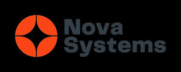

Problem or Motivation
Rehabilitation routines need consistency and measurable progress. Manual approaches often lacked repeatability and data visibility for therapists and researchers.
What I Built
- Mechanical assemblies for guided movement and ergonomic support.
- Sensor instrumentation for motion and force feedback.
- Control workflow for safe actuation and repeatable training cycles.
Tools and Technologies Used
- Fusion 360, CAD workflows, rapid prototyping methods
- Embedded sensors and actuator control concepts
- Data logging and analysis scripts for experiment runs
My Role and Contributions
- Designed mechanical and sensing architecture for prototype iterations.
- Executed test plans and refined design based on trial feedback.
- Supported student learning in controls, kinematics, and practical robotics engineering.
Challenges and Lessons Learned
- Balancing device precision with mechanical robustness was a key tradeoff.
- Early testing uncovered alignment drift under repeated use.
- Hardware-software co-design improved final reliability significantly.
Gallery or Screenshots
